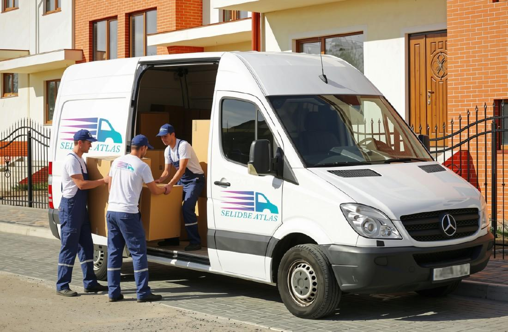
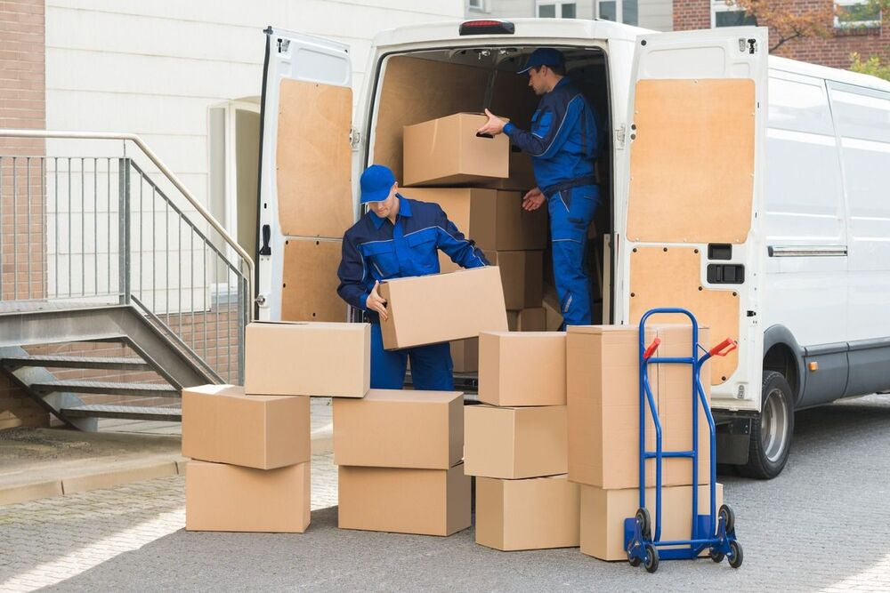
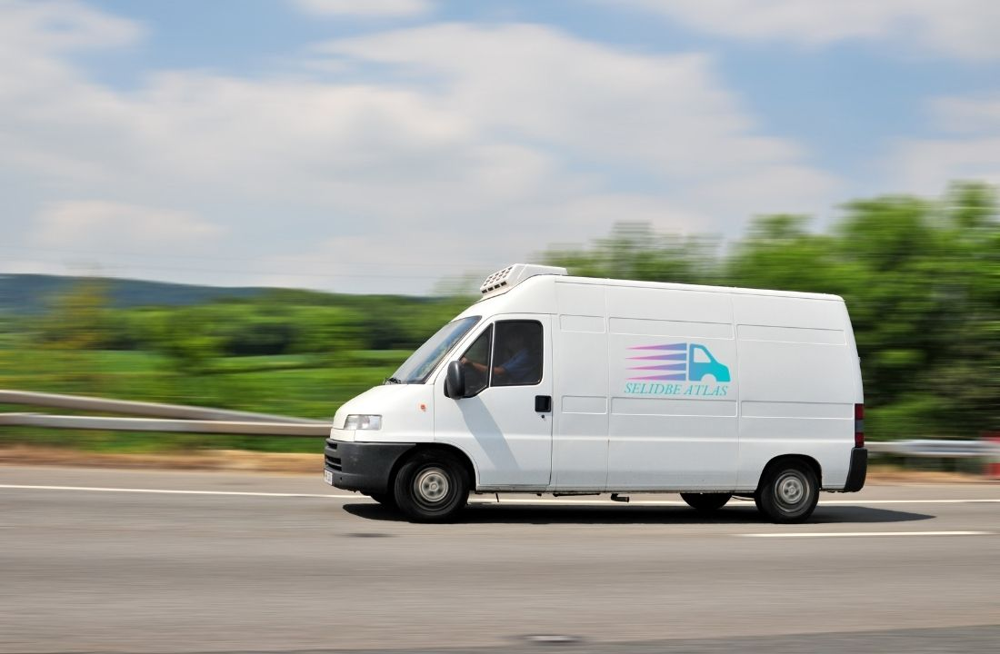

KOMBI SELIDBE BEOGRAD – BRZ I POVOLJAN TRANSPORT
Pouzdan kombi prevoz stvari i nameštaja u Beogradu i celoj Srbiji. Čista i tapacirana vozila, iskusni radnici, zaštita inventara i besplatna procena cene na terenu.
POUZDAN KOMBI PREVOZ ZA SELIDBE - ATLAS BEOGRAD
Kada vam nije potreban veliki kamion, ali želite da se nameštaj, bela tehnika, kutije i ostale stvari prevezu brzo i bezbedno, kombi selidbe predstavljaju praktično rešenje. Kombi je dovoljno prostran za manje i srednje obime selidbe, a istovremeno mnogo lakše prilazi zgradama, kućama, poslovnim objektima i ulicama u kojima je manevrisanje većim vozilom otežano.
Atlas selidbe Beograd organizuje kombi prevoz stvari na teritoriji glavnog grada, kao i međugradska preseljenja širom Srbije. Na raspolaganju su vozila prilagođena transportu nameštaja i drugih predmeta, uz mogućnost angažovanja radnika za utovar i istovar, kao i dodatnih usluga poput demontaže i montaže nameštaja.
Ako niste sigurni da li je za vaše preseljenje dovoljno manje vozilo ili je potreban veći kamion, možemo proceniti količinu stvari i predložiti najpraktičnije rešenje. Za manja preseljenja i prevoz pojedinačnih predmeta često je upravo kombi za selidbe najbrža i najekonomičnija opcija.
Kada su kombi selidbe najbolje rešenje?
Kombi selidbe se najčešće koriste kada nema potrebe za velikim teretnim vozilom. To može biti preseljenje garsonjere, jednosobnog stana, dela stana, studentske sobe, kancelarije ili prevoz nekoliko većih komada nameštaja ili transport klavira.
Pozovite Atlas selidbe
Posebna praktičnost kada se prevozi:
- nameštaj i kućni inventar;
- frižider, veš mašina i druga bela tehnika;
- kartonske kutije sa stvarima;
- garderoba i lične stvari;
- kancelarijska oprema;
- pojedinačni komadi nameštaja;
- stvari prilikom renoviranja ili opremanja prostora;
- nameštaj kupljen u prodavnici ili od privatnog prodavca.
Prednost je i u tome što se kombijem lakše prilazi objektu. U Beogradu postoje brojne uske ulice, zgrade sa ograničenim prostorom za parkiranje i lokacije na kojima je veće vozilo nepraktično. Zato je kombi selidba u Beogradu često jednostavnija za organizaciju, jer će se na primer mnogo lakše izvršiti preseljenje na Vračaru manjim vozilom nego kamionom.
Kombi za selidbe sa velikim i zaštićenim tovarnim prostorom
Za organizaciju kombi selidbi koristimo vozila Mercedes Sprinter i Fiat Ducato, sa nosivošću do 1,5 tone tereta. Prema informacijama koje su trenutno navedene na stranici, takav kapacitet može zadovoljiti potrebe manje i srednje selidbe, u zavisnosti od količine i vrste stvari.
Tovarni prostor je tapaciran i opremljen tako da se nameštaj i drugi predmeti mogu pravilno rasporediti i zaštititi tokom transporta. Vozila se redovno održavaju i pripremaju za gradske i međugradske vožnje.
Kod preseljenja nije dovoljno samo imati dovoljno veliki kombi. Važno je i kako se stvari unose, slažu i obezbeđuju u tovarnom prostoru. Teži predmeti postavljaju se tako da ne ugrožavaju lakše elemente, dok se nameštaj i osetljiviji predmeti dodatno štite odgovarajućim materijalima.
Na taj način se smanjuje mogućnost pomeranja stvari tokom vožnje, naročito kada je u pitanju međugradski transport i duža relacija.

Kombi selidbe Beograd – prednost za gradska preseljenja
Beograd je specifičan za transport zbog gustog saobraćaja, uskih ulica, problema sa parkiranjem i velikog broja stambenih zgrada. Upravo zato je izbor vozila važan deo organizacije preseljenja.
Svakako da kombi selidbe Beograd omogućavaju lakši prilaz mnogim lokacijama i jednostavnije pozicioniranje vozila u blizini ulaza. To može značajno da olakša utovar i istovar, posebno kada je potrebno preneti veći broj kutija ili komada nameštaja.
Ova vrsta vozila su takođe praktična kada se rade manje selidbe, prevoz nekoliko predmeta ili transport stvari između dve lokacije u gradu. Nema potrebe angažovati veliko vozilo ako količina stvari to ne zahteva.
Ukoliko se, međutim, seli kompletan veliki stan, kuća ili se vrši selidba firme i kancelarija sa većom količinom inventara, prethodna procena je najbolji način da se utvrdi da li je kombi dovoljan ili je praktičnije koristiti kamion.
Šta je uključeno u kombi selidbu?
Prevoz kombijem može biti organizovan u skladu sa vašim potrebama. Možete angažovati vozilo za sam transport ili kompletniju uslugu koja uključuje radnike, utovar, istovar i po potrebi demontažu i montažu nameštaja.
Kod kompletne usluge posao može obuhvatiti:
- dolazak vozila na dogovorenu adresu;
- iznošenje stvari iz stana, kuće ili poslovnog prostora;
- zaštitu nameštaja i osetljivih predmeta;
- utovar i pravilno slaganje u kombiju;
- bezbedan transport;
- istovar na odredištu;
- unošenje stvari u novi prostor;
- demontažu krupnog nameštaja kada je potrebno;
- ponovnu montažu na novoj adresi.
Posebno je važno obratiti pažnju na velike ormare, plakare, krevete i druge elemente koji ne mogu lako da prođu kroz vrata, hodnike ili stepenište. U takvim situacijama nameštaj se po potrebi rastavlja pre iznošenja, a nakon transporta ponovo sastavlja.
Zaštita nameštaja i stvari tokom prevoza
Jedan od najvažnijih delova svake kombi selidbe jeste zaštita stvari. Čak i kada je vožnja kratka, nepravilan utovar ili nezaštićen nameštaj mogu dovesti do ogrebotina, udubljenja ili drugih oštećenja.
Prilikom transporta nameštaja pre utovara potrebno je proceniti koji predmeti zahtevaju dodatnu zaštitu. Za osetljive površine mogu se koristiti zaštitne folije, ćebad, kartonske obloge i drugi materijali.
Nakon pakovanja stvari kartonske kutije takođe treba pravilno rasporediti. Teže stvari je bolje stavljati u manje i čvršće kutije, dok se lakši predmeti mogu rasporediti iznad njih. Kutije ne treba prepunjavati, jer moraju biti stabilne prilikom slaganja u vozilu.
Korisno je svaku kutiju obeležiti prema sadržaju i prostoriji kojoj pripada. Tako je nakon istovara mnogo jednostavnije organizovati raspakivanje.

Utovar i istovar iz transportnih vozila
Utovar nije samo unošenje stvari u vozilo. Nameštaj treba pažljivo izneti iz objekta, zaštititi kritične delove i pravilno rasporediti teret u tovarnom prostoru.
Poseban problem predstavljaju uska vrata, štokovi, stepeništa i hodnici. Veliki ormar koji bez problema može da stane u prostoriju često ne može da prođe kroz vrata u jednom komadu. Zato je korisno pre selidbe proveriti dimenzije većih elemenata i po potrebi organizovati njihovu demontažu.
Kod zgrada sa teretnim liftom posao je obično jednostavniji, dok preseljenja bez lifta zahtevaju više vremena i fizičkog rada. U oba slučaja potrebno je pažljivo nositi nameštaj kako ne bi došlo do oštećenja zidova, vrata ili samih predmeta.
Naši radnici mogu preuzeti posao iznošenja, utovara, transporta i istovara, tako da ne morate sami da organizujete fizički deo kada je u pitanju kombi prevoz nameštaja.
Kombi selidbe cena – koliko košta prevoz?
Jedno od najčešćih pitanja korisnika je kolika je cena kombi selidbe. Ne postoji jedna cena koja može da odgovara svakom preseljenju, jer konačan iznos zavisi od konkretne situacije.
Na cenu kombi selidbe utiču:
- količina i vrsta stvari;
- udaljenost između dve adrese;
- spratnost objekta;
- postojanje lifta;
- količina i težina nameštaja;
- broj angažovanih radnika;
- potreba za demontažom i montažom;
- zahtevnost utovara i istovara;
- međugradska kilometraža;
- dodatne usluge i specijalni predmeti.
Prema trenutno objavljenom cenovniku na stranici, cena kombi selidbe u gradu je od 3.000 dinara, dok je za transport van grada navedena od 50–60 dinara po kilometru. Cena sa dva radnika je od 5.000 dinara.
| USLUGA | CENA |
|---|---|
| Cena kombi selidbe u gradu | Od 3000 din |
| Cena kombi selidbe van grada | 50 - 60 din/km |
| Kombi + 2 radnika | od 5000 din |
Ove cene treba posmatrati kao početne/orijentacione, jer se stvarna cena određuje prema obimu konkretnog posla. Ako se količina stvari, spratnost ili potrebne usluge razlikuju od standardne selidbe, razlikovaće se i konačna ponuda.
Zato Atlas selidbe Beograd omogućava besplatnu procenu preseljenja. Na osnovu količine stvari, adresa i uslova na lokaciji moguće je mnogo preciznije odrediti šta je potrebno za realizaciju posla i koliko će usluga koštati.
Zašto je kombi često jeftiniji od kamiona?
Kada je količina stvari manja, nema mnogo smisla angažovati kamion. Manje vozilo tada može da obavi posao uz manje troškove i jednostavniju organizaciju.
Osim same cene vozila, važni su i vreme potrebno za dolazak do objekta, mogućnost prilaska adresi, utovar i istovar. Kod manje selidbe kombi može biti praktičniji upravo zato što je prilagodljiviji.
Sa druge strane, nije cilj izabrati najmanje moguće vozilo po svaku cenu. Ako se sve stvari ne mogu bezbedno smestiti u vozilo, dodatna tura može poništiti uštedu. Zato je procena količine stvari važna pre dogovora.
Kombi selidbe za manja preseljenja i pojedinačne predmete
Kombi selidbe nisu namenjene samo za kompletno preseljenje stanova. Ova vrsta transporta može biti veoma praktična i kada imate samo nekoliko predmeta koje treba prevesti.
To može biti transport:
- jednog ili više komada nameštaja;
- prevoz bele tehnike;
- kancelarijske opreme;
- kućnih aparata;
- stvari iz skladišta;
- nameštaja prilikom kupovine ili prodaje;
- stvari nakon renoviranja;
- pojedinačnih težih predmeta.
Za ovakve poslove nema potrebe za većom organizacijom. Dovoljno je dogovoriti termin, adresu preuzimanja, adresu isporuke i količinu stvari.

Međugradske kombi selidbe iz Beograda
Međugradska selidba zahteva nešto drugačiju organizaciju jer se pređe veći broj kilometara i stvari duže ostaju u vozilu. Kombi selidbe su praktične za transport između Beograda i drugih gradova u Srbiji.
Zbog toga je posebno važno da nameštaj bude dobro zaštićen, a teret pravilno raspoređen i pričvršćen. Kod duže vožnje svaki predmet mora ostati stabilan kako ne bi došlo do pomeranja i oštećenja.
Atlas agencija za selidbe organizuje transport na međugradskim relacijama, uz prethodni dogovor o adresama, količini stvari i potrebnim uslugama.
Kombi ili kamion za selidbe – šta izabrati?
Najjednostavnije pravilo je: količina stvari određuje vozilo.
Za manja i srednja preseljenja, garsonjere, jednosobne stanove, pojedinačne predmete i situacije kada je važan lakši prilaz objektu uglavnom je praktičnije kombi vozilo.
Kamion za selidbe je bolje rešenje kada se seli veća kuća, veći stan ili poslovni prostor sa mnogo nameštaja i inventara.
Ako niste sigurni šta vam je potrebno, nema razloga da sami procenjujete zapreminu tovarnog prostora. Dovoljno je da nas pozovete i mi ćemo izaći na teren i izvršiti besplatnu procenu posla, a na osnovu viđenog stanja može se proceniti koje vozilo i koliko radnika je potrebno.
Kako da se pripremite za kombi selidbu?
Dobrom pripremom možete skratiti vreme preseljenja i smanjiti mogućnost oštećenja.
Pre dolaska ekipe preporučljivo je:
- Odvojiti stvari koje se ne prevoze.
- Spakovati sitnije predmete u čvrste kutije.
- Obeležiti kutije prema prostorijama.
- Posebno izdvojiti lomljive predmete.
- Isprazniti fioke i ormare.
- Proveriti da li veliki komadi nameštaja mogu da prođu kroz vrata.
- Osloboditi prilaz od ulaza do vozila.
- Napomenuti unapred ako postoji problem sa parkingom, liftom ili stepeništem.
- Prijaviti posebno teške ili gabaritne predmete.
- Dogovoriti da li su potrebni radnici, pakovanje, demontaža ili montaža.
Što više informacija imamo pre početka posla, to je lakše napraviti dobar plan i izbeći neprijatna iznenađenja na dan selidbe.
Kontaktirajte Atlas selidbe
Zašto odabrati Atlas za kombi selidbe?
Kod preseljenja nije važan samo vozilo. Važno je ko njime upravlja, ko nosi stvari i na koji način se teret zaštiti i rasporedi.
Naša agencija obezbeđuje kombinaciju odgovarajućih vozila, iskusnih radnika i pravilne organizacije posla. Na raspolaganju su Mercedes Sprinter i Fiat Ducato vozila, zaštita stvari, utovar i istovar, kao i dodatne usluge prema potrebama klijenta.
Ako vam je potreban samo prevoz, može se organizovati samo transport. Ako želite kompletnu uslugu, ekipa može preuzeti i fizički deo posla, od iznošenja i utovara do istovara i unošenja na novu adresu.
Zatražite ponudu za kombi preseljenje
Ako planirate preseljenje u Beogradu ili vam je potreban prevoz stvari do drugog grada, javite nam šta je potrebno prevesti, sa koje i na koju adresu i da li su vam potrebni radnici za utovar i istovar.
Na osnovu tih informacija možemo proceniti obim posla i predložiti odgovarajuće vozilo i uslugu. Za zahtevnije poslove dostupna je i besplatna procena na adresi, kako biste pre našeg angažovanja znali šta je potrebno i kako će selidba biti organizovana.
Često postavljana pitanja o kombi selidbama
Cena kombi selidbe u Beogradu zavisi od više faktora, uključujući udaljenost između lokacija, spratnost objekta, postojanje lifta i ukupan obim stvari. Osnovna cena za gradsku vožnju bez radnika kreće se od 3.000 dinara. Za najprecizniju ponudu najbolje je da nas pozovete kako bismo uradili besplatnu procenu troškova na osnovu vaših specifičnih potreba.
Naša kombi vozila (Mercedes Sprinter, Fiat Ducato) imaju izuzetan kapacitet i nosivost do 1.5 tone. U njih bez problema staju sve stvari iz prosečne garsonjere ili jednosobnog stana do 40m². To uključuje krupni nameštaj, belu tehniku (frižider, veš mašina) i veći broj kartonskih kutija. Tapaciran tovarni prostor garantuje bezbednost svim elementima.
Da! Pored gradskog prevoza u Beogradu, kombi vozila su idealna za brze međugradske selidbe širom Srbije zbog manjih putarina i troškova goriva u odnosu na kamion. Takođe, organizujemo i kombi prevoz stvari u zemlje regiona (Crna Gora, BiH, Hrvatska, Makedonija) uz obezbeđivanje neophodne carinske dokumentacije.
Naravno. Možete iznajmiti samo kombi vozilo sa našim vozačem (ukoliko imate svoju radnu snagu), ili se osloniti na našu kompletnu uslugu. Naši profesionalni radnici su obučeni za bezbedno nošenje teških tereta, utovar, istovar i pravilno slaganje stvari u tovarnom prostoru kako ne bi došlo do oštećenja tokom vožnje.
Da, nudimo uslugu profesionalne demontaže i montaže. Ukoliko imate krupne ormare, plakare ili krevete koji ne mogu da prođu kroz sobna vrata ili hodnike zgrade, naši iskusni radnici će ih pažljivo rastaviti pre utovara, zaštititi folijama i ponovo sastaviti na vašoj novoj adresi.
Cena se određuje na osnovu količine stvari, udaljenosti, spratnosti, lifta, broja radnika i dodatnih usluga. Zbog toga je najprecizniji način da se pre selidbe napravi procena konkretnog posla.
Da. Kada imate sopstvenu radnu snagu i potreban vam je samo transport, moguće je dogovoriti uslugu kombi prevoza bez angažovanja dodatnih radnika.